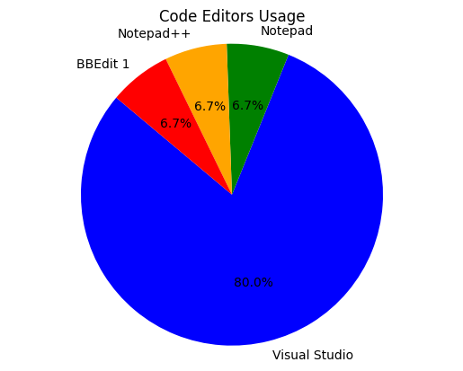
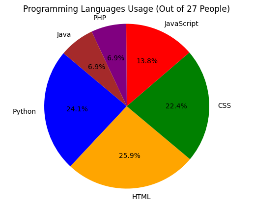
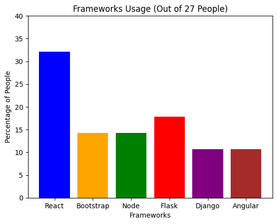

Jesse Boateng
Computer Science Department
Southern Connecticut State University
To obtain the results for this assignment, I thoroughly reviewed all the presentations from Assignment 1. I compiled and analyzed the data provided by my classmates, extracting valuable insights on their preferred methods in various aspects of web design. This involved creating graphs to visualize the choices made by individuals in terms of code editors, programming languages, frameworks, data sources, file transfer utilities, web browsers, and operating systems. The comprehensive analysis allowed me to gain an understanding of the diverse preferences within our class, contributing to a more informed perspective on the tools and technologies favored by our peers in the field of web design.

Most people in our group really liked using Visual Studio Code for coding. It's super popular because it has a bunch of cool features and is easy to use, making it the go-to choice for most of us.
Advantages
Disadvantages


As the semester progresses, I plan to expand my understanding by delving into research on various frameworks. Despite my limited background, I am committed to exploring and gaining insights into different frameworks to enhance my knowledge and skills in the subject matter.
The majority of the class, comprising around 85%, favors the use of Windows as their preferred operating system.
Advantages
Disadvantages
The preferred file transfer tool for the majority of the class is FileZilla. This choice is based on its user-friendly interface and efficient file transfer capabilities. However, it's essential to consider both advantages and disadvantages.
Advantages
Disadvantages